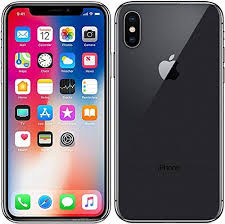
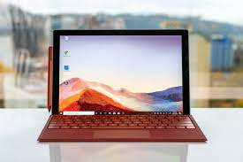

El camino al exito es la actitud.
Ayling Mishel Yam Dzul
¡Mente positiva!
Información en la PC
La información, en síntesis, es la materia prima, el eje central que ha prendido y dinamizado exponencialmente a niveles incontenibles el desarrollo de la tecnologías informáticas (TI) o tecnologías aplicadas a la información.
Teclado
Un teclado es un dispositivo de entrada, en parte inspirado en el teclado de las máquinas de escribir, que utiliza un sistema de puntadas o márgenes, para que actúen como palancas mecánicas o interruptores electrónicos que envían toda la información a la computadora o al teléfono móvil.
wifi en la pc
La omnipresente tecnología inalámbrica Wi-Fi se ha convertido en indispensable para las redes domésticas, la conexión pública a Internet, el apoyo al Internet de las cosas y mucho, mucho más.
La Tecnologia.
Softwares en una computadora
Estos son los programas informaticos que hacen posible la ejecucion de tareas específicas dentro de un computador. Por ejemplo, los sistemas operativos, aplicaciones, navegadores web, juegos o programas. Estas características siempre trabajan de la mano.Las dos principales categorías son los sistemas operativos y el software aplicativo (aplicaciones). El sistema operativo El sistema operativo es el programa más importante porque controla el funcionamiento del computador y el de los demás programas.
Importancia del hardware y software en las laptos
Sin el software no sería posible indicarle al ordenador que necesitas imprimir un documento. El hardware, en cambio, recibe las ordenes del software para que un documento pueda ser impreso haciendo uso de un hardware complementario (impresora). En un pc con pantalla táctil, el hardware permite seleccionar, mediante botones virtuales, las opciones y comandos. El hardware introduce datos al sistema del pc mediante comandos del teclado numericos y alfanumericos. Gracias al hardware las señales acusticas del microfono se convierten en señales electricas.
Datos.
Nombre:Ayling Mishel Yam Dzul.
Edad: 17 años.
Fecha de nacimiento: 17 septiembre 2004.